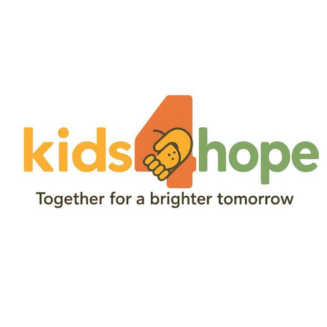
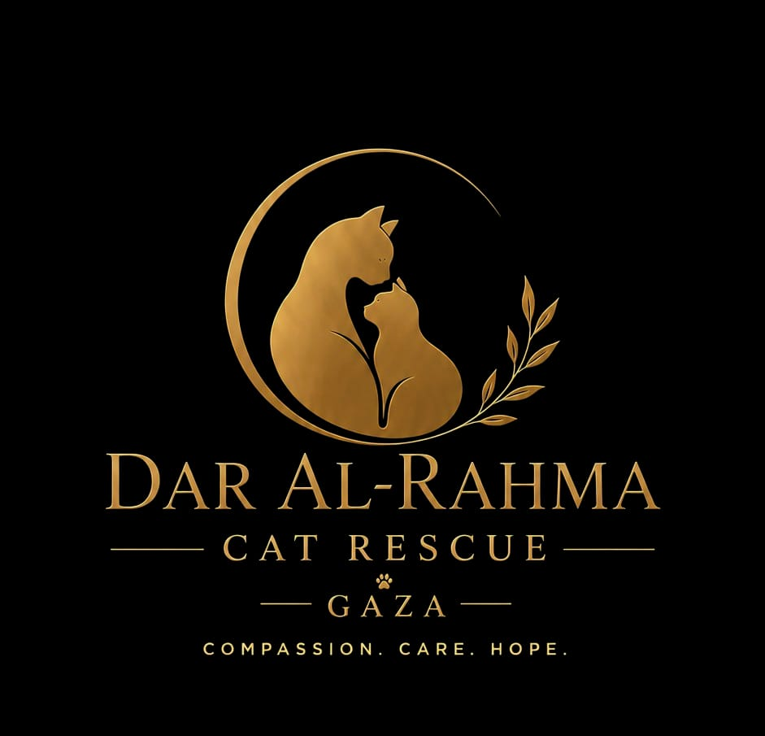

Unsere Projekte
Ein Dach, viele Wege zu helfen. Jedes Projekt hat sein eigenes Gesicht, sein eigenes Team vor Ort – und das Haus Dar Al-Rahma im Rücken.
Medical Point
Stabilisiert Schwerverletzte, bis nach 30 bis 45 Minuten der Krankenwagen kommt – mit kaum Material und großem Können.
Zum Projekt →
Kids4Hope
Hasan und sein Team begleiten 140 Waisenkinder beim Lernen – und Kinder sollen Schutz, Versorgung und Zukunft bekommen.
Zum Projekt →
Dar Al-Rahma Cat Rescue
Rettung, Pflege und tierärztliche Versorgung von Katzen und Hunden mitten in der Gelben Zone – mit Patenschaften und Namensgebung.
Zum Projekt →Arbeitsbereiche im Aufbau
Was als Nächstes unter dem Dach entstehen soll.
Wie Projekt und Haus zusammenarbeiten
Das Projekt vor Ort
Eine Projektleitung in Gaza verantwortet die tägliche Arbeit – sie kennt die Menschen, die Tiere und die Lage am besten.
Das Haus
Dar Al-Rahma gibt Struktur: Spenden, Belege, Berichte, Kontakte, Partner und – mit der gUG – eine feste rechtliche Grundlage.